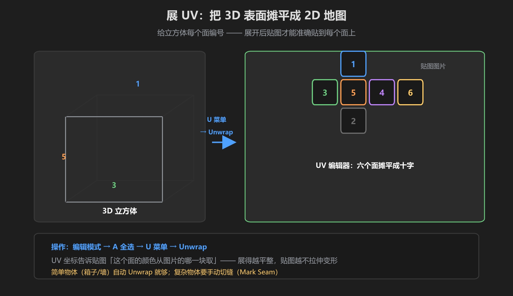
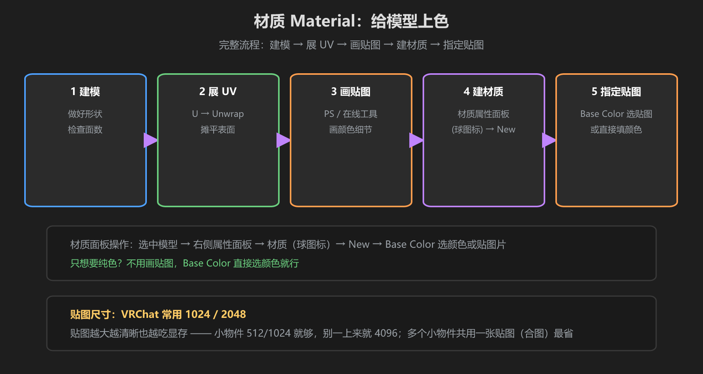

第 4 篇：UV 与材质 — 给模型上色
网格决定了模型的形状，而颜色和细节来自材质与贴图。想让箱子有木纹、有贴纸，就要懂 UV 和材质面板。本篇也讲清楚 VRChat 里贴图尺寸的讲究。
1. 什么是 UV（贴图坐标）

图：UV 展开 = 把 3D 表面「摊平」成一张 2D 地图
想象你给一个立方体包礼物纸：把包装纸摊开，它是一张平面。UV 就是这个「摊平后的坐标」—— 它告诉贴图图片：模型的每个面，颜色从图片的哪一块取。
- U = 图片的横向坐标，V = 图片的纵向坐标（所以叫 UV）
- 没有 UV，贴图会像贴纸乱贴一样：拉花、错位、颜色乱
- 简单物体（箱子、椅子）Blender 自动展开就够；复杂物体要手动切缝（Mark Seam）
2. 展 UV 的操作
- 编辑模式（
Tab）→ 按A全选所有面 - 按
U打开 UV 菜单 → 选Unwrap（智能展开 Smart UV Project 也可） - 顶部切换出 UV 编辑器窗口（或把窗口一角拖成两栏），看到摊平后的形状
- 形状越方正、越少拉伸，贴图效果越好
判断拉伸：UV 编辑器里带棋盘格贴图检查。棋盘格看起来变形得越厉害，说明这个面 UV 拉伸越严重 —— 大块复杂表面（墙面、桌面）建议手动 Mark Seam 切开再 Unwrap。
3. 材质面板：上色

图：建模 → 展 UV → 画贴图 → 建材质 → 指定贴图
- 选中模型 → 右侧属性面板点材质（球图标）
- 点
New新建材质，起个名字（如 box_wood） - 只想要纯色？
Base Color（基础色）直接选颜色 - 想要贴图？Base Color 右侧小圆点 → Image Texture → 打开你的贴图图片
- 如果图片显示位置不对，回第 2 步重新展 UV
VRChat 材质注意：VRChat 世界用的是 PBR 材质流程。Blender 里能预览的效果（如 Cycles 光照），导入 Unity 后要换成 Unity 的 Standard/PBR Shader 重新调 —— 贴图本身（颜色贴图）可以无缝带过去，光照效果会不同，这很正常。
4. 贴图尺寸对 VRChat 的意义
| 尺寸 | 用途 | 说明 |
|---|---|---|
| 512 | 小道具 | 杯子、球、小装饰 —— 完全够 |
| 1024 | 常规道具/家具 | 箱子、椅子、门 —— VRChat 最常用 |
| 2048 | 大表面/重点物件 | 墙面、招牌、展示品 —— 已是世界级贴图上限附近 |
贴图越大越清晰，但也越吃显存（VRAM）。VRChat 里同时显示的贴图总量决定世界卡不卡：
- 小物件用 512/1024，别一上来就 4096
- 多个小物件可以共用一张贴图（合图/图集），一个物体只采样一次贴图最省
- 贴图格式推荐 PNG（带透明时）或 JPG（无透明压体积）
学前检查清单
- 理解 UV 是「3D 表面到 2D 图片的映射」
- 会全选 → U 菜单 → Unwrap 展 UV
- 会建材质、改 Base Color、指定贴图
- 知道 VRChat 常用贴图尺寸 1024/2048，不无脑用大贴图